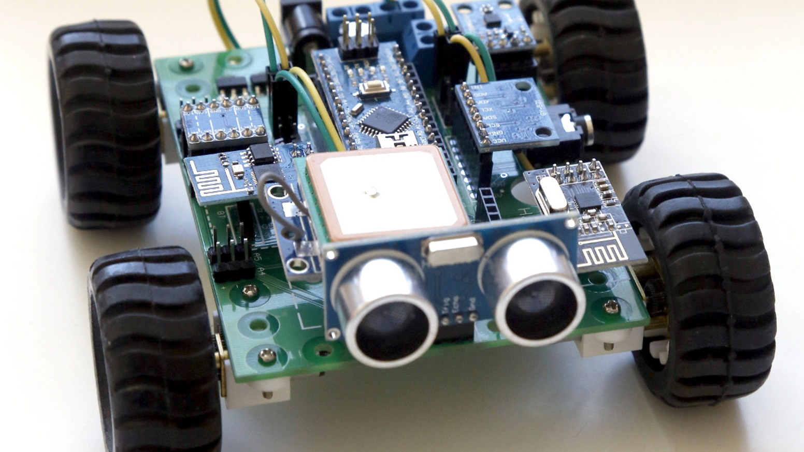
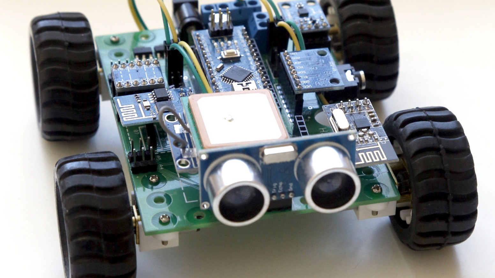

Hello. I feel the need to start this out by stating my name even though
I already did that. So hello, my name is Vanshikha. I like hash browns, Panda Express,
tennis, writing, and robotics. I play the piano and flute and sing and as for my
favorite color, I am currently debating between three different shades of brown. Also,
I've been stuck at home for the past... 10 months. The End.
 
